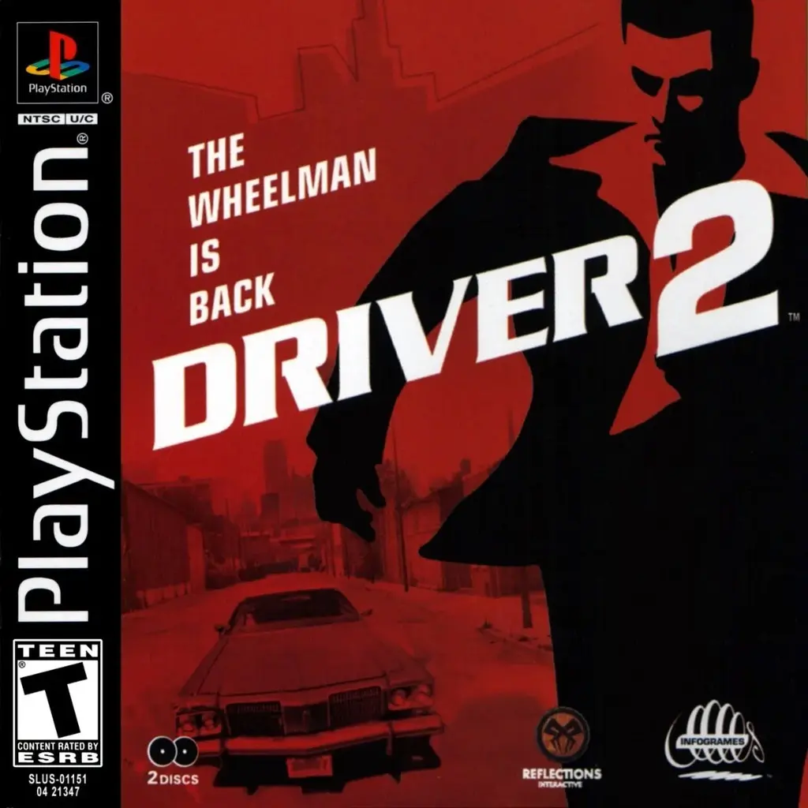

🚕 Driver 2: Back on the Streets (PS1)
A sequência que fez o impossível: Tanner finalmente aprendeu a abrir a porta e esticar as pernas!
Desta vez, a caça ao criminoso Pinky Lennon leva você para Chicago, Havana, Las Vegas e Rio de
Janeiro. Sim, o Tanner veio dar um rolê aqui no Brasil antes mesmo do CJ pensar em San Andreas.
🏃♂️ Por que este clássico?
Porque foi um dos jogos mais ambiciosos do PlayStation 1. Ver o Tanner correndo (com aquela animação
de quem está meio travado) para roubar qualquer carro no meio do trânsito era revolucionário.
As perseguições ficaram mais intensas e as cidades, muito mais detalhadas.
💾 Como Salvar
O esquema continua o mesmo: use o Save State do iframe para não passar raiva.
Se for jogar no modo história ("Undercover"), o jogo vai pedir para salvar no Memory Card entre as
missões. Lembre-se: no PS1 original, esse jogo vinha em 2 CDs, então se prepare para a jornada!
💡 Curiosidades do Asfalto
- O Rio de Janeiro: Driver 2 foi um dos primeiros grandes jogos 3D a renderizar o
Rio. Ver o Corcovado com os gráficos quadriculados do PS1 era o ápice da tecnologia em 2000!
- O Homem que Não Pula: Tanner aprendeu a andar, mas não a pular. Ele também é
incapaz de nadar. Se cair na água em Havana, é "Game Over" instantâneo. O detetive é feito de
açúcar!
- Carros Secretos: Cada cidade tem um carro secreto escondido em lugares
improváveis (como dentro de estádios ou atrás de cercas). Achar o Mini Cooper em Chicago é um
rito de passagem.
- Curva de Dificuldade: Se você achava a garagem do Driver 1 difícil, tente
completar as últimas missões de Driver 2 sem jogar o controle na parede. A polícia aqui é nível
"perseguição de filme de ação com orçamento infinito".
💡 Guia by Boko
Clique aqui
🚔 Entre no carro e pise fundo (mas cuidado com os cruzamentos)!